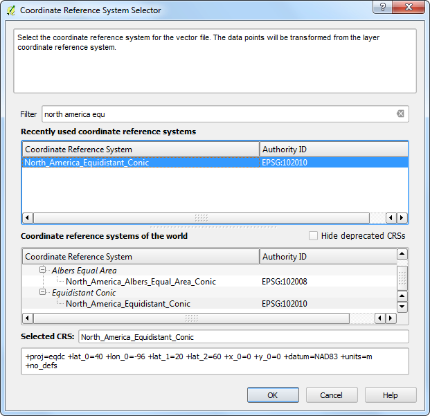
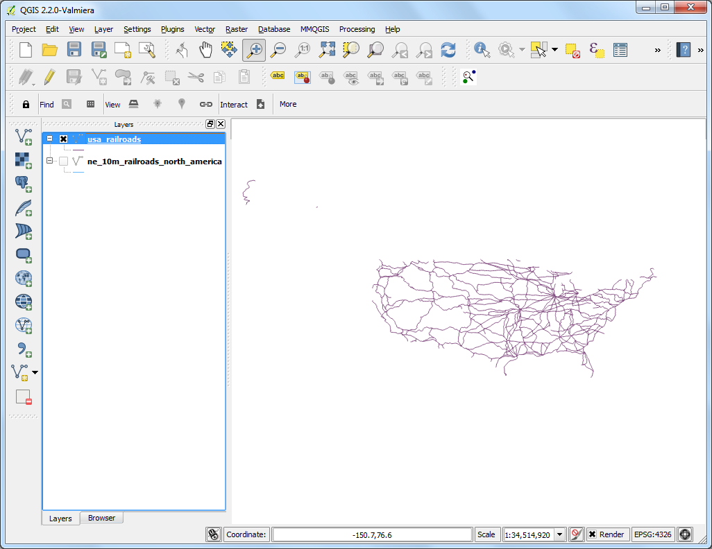
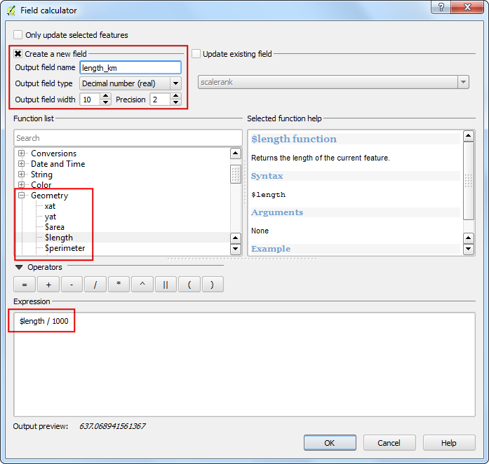
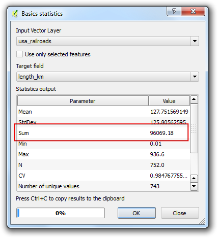

Menghitung panjang garis dan Statistik/
[ Download PDF A4 Letter ]
QGIS mempunya fungsi bulit-in untuk menghitung beragam properti berdasarkan geometri fitur - seperti, panjang, luas, keliling dan lain-lain. Tutorial ini akan menunjukkan bagaimana caranya menggunakan Field Calculator untuk menambah kolom dengan sebuah angka yang merepresentasikan panjang tiap fitur.
Tinjauan Tugas
Kita akan menggunakan sebuah shapefile polyline dari rel kereta api di Amerika Utara dan mencoba untuk menentukkan panjang total rel kereta api di Amerika Serikat.
Skill lain yang akan anda pelajari
Menggunakan ekspresi untuk memilih fitur.
Me-reproyeksi sebuah layer dari Geografis menjadi Sistem Referensi Koordinat (CRS).
Memperlihatkan statistik nilai dari attribut pada sebuah layer.
Prosedur
Akses .

Jelajahi samapai file ne_10m_railroads_north_america.zip dan klik OK.

Dalam dialog Select layers to add..., pilih layer ne_10m_railroads_north_america.shp .

Ketika layer sudah dibuka, anda akan melihat bahwa layer memiliki garis mewakili rel kereta untuk seluruh Amerika Utara. Karena kita ingin menghitung panjang garis hanya untuk kereta api Amerika Serikat saja, kita perlu untuk memilih garis yang berada di daerah Amerika Serikat. Klik kanan pada layer dan pilih Open Attribute Table.

Layer ini memiliki attribut bernama xxx . Ini ada kode 3 huruf untuk negara dimana fitur-fiturnya berada di daerah negara tersebut. Kita akan menggunakan nilai dari attribut ini untuk memilih fitur yang berada di Amerika Serikat.

Pada jendela Attribute Table , klik tombol Select features using an expression .

Sebuah dialog bari Select By Expression akan terbuka. Temukan attribut sov_a3 pada Fields and Values di bagian Functions list . Double-klik untuk menambahkannya pada area teks Expression. Lengkapi ekspresi dengan mengetik "sov_a3" = 'USA' . Klik Select dilanjutkan dengan Close..

Kembali pada jendela utama QGIS, anda akan melihat bahwa semua garis yang berada di daerah Amerika Serikat terpilih dan muncul dengan warna kuning.

Sekarang simpan hasil seleksi tadi menjadi sebuah shapefile yang baru. Klik kanan pada layer ne_10m_railroads_north_america dan pilih Save Selection As....

Klik Browse dan beri nama hasil sebagai usa_railroads.shp . Kita juga ingin mengubah CRS layer tersebut. Klik Browse di samping CRS.
Catatan
Fungsi built-in yang menggunakan geometri fitur untuk perhitungan menggunakan unit dari CRS layer tersebut. Sistem Referensi Koordinat (CRS) Geografis seperti EPSG:4326 memiliki degrees sebagai satuan unit - jadi panjang suatu fitu dalam satuan degrees dan luas atau area dalam square degrees - di mana ini tidak mempunyai arti. Anda perlu untuk menggunakan CRS terproyeksi dengan unit meters atau feet untuk melakukan kalukulasi seperti ini.

Karena kita tertarik untuk menghitung panjang, mari kita pilih sebuah proyeksi yang equidistant atau sama jauh. Ketik north america equ pada kotak pencarian Filter . Dari panel hasil di bawah, pilih North_America_Equidistant_Conic EPSG:102010 sebagai CRS. Klik OK.

Pada dialog Save vector layer as..., Beri tanda cek Add saved file to map dan klik OK.

Ketika proses ekspor selesai, anda akan melihat layer baru usa_railroads terbuka di QGIS. Anda dapat menghapus tanda cek pada box di sebelah layer ne_10m_railroads_north_america untuk menonaktifkannya karena kitak tidak membutuhkannya lagi.

Klik kanan pada layer usa_railroads dan pilih Open Attribute Table.

Sekarang saatnya untuk menambah sebuah kolom untuk panjang pada setiap fitur. Taruh layer dalam mode pengeditan dengan mengklik tombol Toggle editing , Ketka sudah dalam mode pengeditan, klik tombol Open field calculator

Pada Field Calculator, centang Create a new field . Masukkan length_km sebagai Output field name . Pilih Decimal number (real) sebagai guilabel:Output field type . Ubah output Precision menjadi 2 . Di panel Function list , temukan $length pada guilabel:Geometry . Dobel-kliklah untuk menambahkannya ke Expression . Lengkapi ekspresi sebagai $length / 1000 karena CRS dari layer kita dalam unit meters dan kita ingin hasilnya dalam km . Klik OK.

Kembali ke Attribute Table , anda akan melihat sebuah kolom baru length_km muncul, Klik tombol Toggle editing untuk menyimpan perubahan pada tabel attribut.

Sekarang kita punya data tentang panjang setiap individu garis di layer kita, kita dapat dengan mudah menjumlahkan semua dan menemukan Total panjang . akses Vector –> Analysis Tools –> Basic Statistics. .

Pilih Input Vector layer dengan usa_railroads . Pilih Target field dengan length_km dan klik OK . Anda akan melihat beragam statistik muncul. Nilai :guilabel:`Sum adalah total panjang rel yang kita cari.
Catatan
Jawaban ini mungkin beragam jika proyeksi yang berbeda yang dipakai. Di dalam latihanm, panjang garis untuk jalan dan fitur linier lainnya diukur di atas tanah dan tersedia sebagai attribut untuk data set. Metode ini berfungsi baik ketika attribut seperti ini absen dan sebagai alat untuk memperkirakan panjang garis sebenarnya
